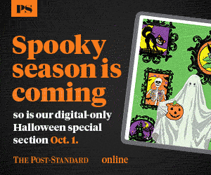
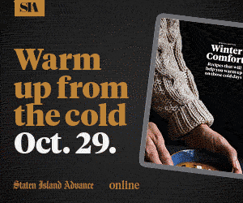

Digital Special Sections Marketing
The process.
This was one of the largest projects of the year for me. I worked to evolve the components and continue iterating them until they maximized the presentation and relative ease of production. The Digital Special sections are produced by Newsroom Enterprise Teams and exist only in the Digital or Online newspaper platform. The goal of this marketing was to draw more subscribers to it, thus reinforcing the brand value to existing customers and also draw new subscribers along the way.
The Campaigns.
This was the first iteration of the Digital Special Section Marketing style. It established a general aesthetic but also started the process of automation - allowing for the quick production of print ads in two sizes for all 17 markets, as well as digital ads to appear on the sites respective online presence and emails to be sent to subscribers and nonsubscribers. Click the images for more.
View the email designSee all of the materials


This was the second iteration of the Marketing materials. I introduced quite a bit of automation to the print ads, using Adobe InCopy for text updates and a single image file embedded as a Smart Object in the InDesign file and the Photoshop files. I also worked to make the email more user-friendly and ADA compliant. I also built some extraordinary export engines to send gifs that are very small with a big impact. Click the images for more.
View the email designSee all of the materials


This was the thrid iteration of the Digital Special Section Marketing style. I made major updates and adjustments to the email designs, introducing a functioning light/dark invisible media query that would perform differently based on user specs. Change your system settings from light to dark or dark to light to see it in action. Click the images for more.
View the email designSee all of the materials 

This was the fourth iteration of the Digital Special Section Marketing style. I really worked to clean up templates, making them much more efficient at quickly creating an entire marketing campaign with materials in less than an hour. Also, be sure to check the Light/Dark rendering of the email. Click the images for more.
View the email designSee all of the materials 


This was the fifth iteration of the Digital Special Section Marketing style. I worked to create 'special' overlays for marketing that had slightly different demands, in this case being Christmas. I worked very hard to create a snowflake animation for the emails that worked across platform. I also optimized the rendering across platform so it would look good on almost any email server. Click the images for more.
View the email designSee all of the materials


This was the sixth iteration of the Digital Special Section Marketing style. We had made several substantial changes to the Marketing campaigns based on need, the largest being the addition of a second reference to Account Activation as the original landing page had changed. This necessitated a larger edit to the templates. I used the opportunity to also further optimize the template performance. Click the images for more.
View the email designSee all of the materials